Tout le match officiel avec l'eScoresheet OpenVolley, de la première ouverture à la feuille de match finale : une tablette à l'horizontale à la table de marque, un match d'une ligue suisse. Les équipes et les personnes des images sont inventées.
1
Première ouverture : Suisse ou Global
La première fois, l'app demande « Comment utilises-tu OpenVolley ? ». Choisis « Suisse » pour les matchs des ligues suisses : connexion, liste des matchs, Einsatzliste, effectifs du club et cloud.
« Global » sert à tout tournoi ou match entre amis : sans connexion, matchs et effectifs depuis Excel. Tu peux le changer plus tard dans « Options », tant qu'aucun match n'est sur l'appareil.
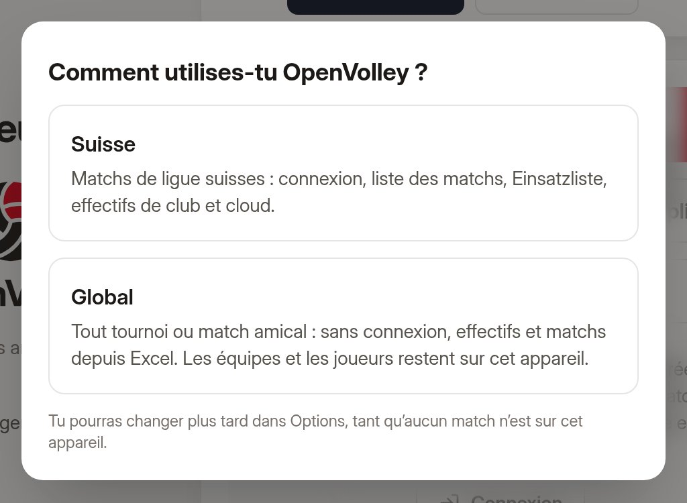
2
Accueil
Chaque match commence à l'accueil. Connecte-toi avec ton compte OpenVolley (menu ☰), puis appuie sur « Match officiel » : il liste les matchs à domicile de ton club du jour.
« Match test » sert à s'entraîner et n'est jamais enregistré sur le serveur, « Match simplifié » n'est pas officiel (ni effectifs ni signatures), « Tableau de score » ne montre que les points et les sets. « Continuer le match » te ramène au match sur cet appareil.
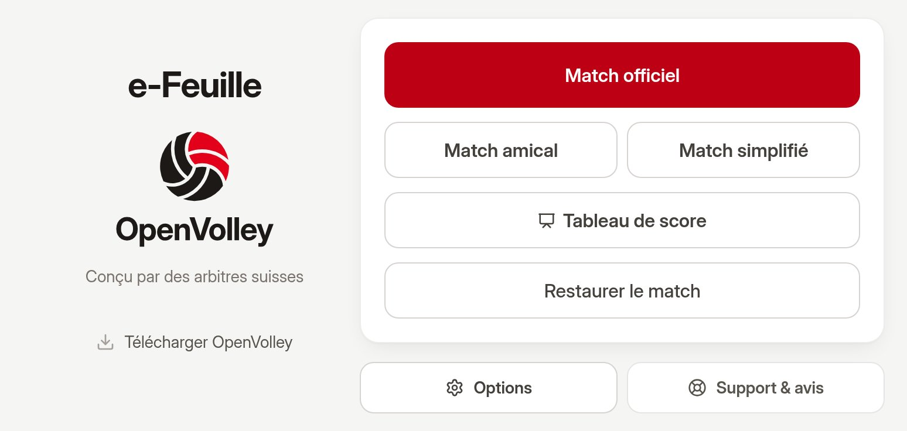
3
Charger le match depuis le calendrier
Ton match n'est pas dans la liste ? Appuie sur « Saisir le match moi-même », puis sur « Charger match depuis le calendrier ». Choisis le genre et la ligue, puis ton match.
L'app remplit le numéro du match, les équipes, la date, l'heure, la salle et les arbitres. Il faut une connexion internet.
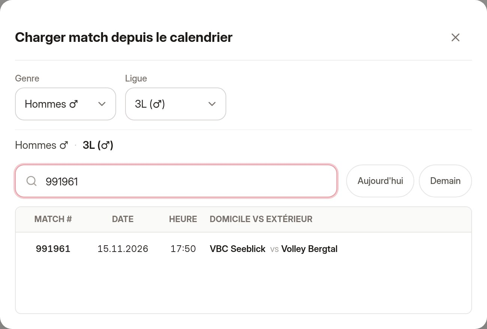
Pour marqueuses et marqueurs · eScoresheet 3.2.5
4
Infos du match et officiels
Vérifie la page et complète ce que le calendrier n'a pas, par exemple le numéro de licence du marqueur et les noms courts des équipes, puis appuie sur « Créer le match ». Connecté, le marqueur, c'est toi. Le 1er arbitre et le marqueur sont obligatoires ; le 2e arbitre, le marqueur adjoint et les juges de ligne sont facultatifs. Chaque arbitre et chaque équipe peut recevoir une adresse e-mail pour la feuille de match finale.
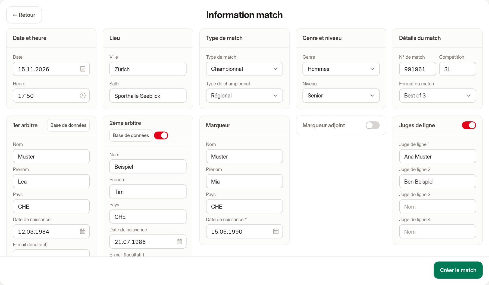
5
Effectifs
Appuie sur « Modifier l'effectif » pour chaque équipe. Saisis les joueurs, ou appuie sur « Importer PDF » et choisis le PDF de l'effectif de l'équipe ou l'Einsatzliste. Marque le capitaine (C) et au plus deux libéros, vérifie les numéros de maillot et de licence, ajoute les officiels du banc, puis appuie sur « Confirmer ».
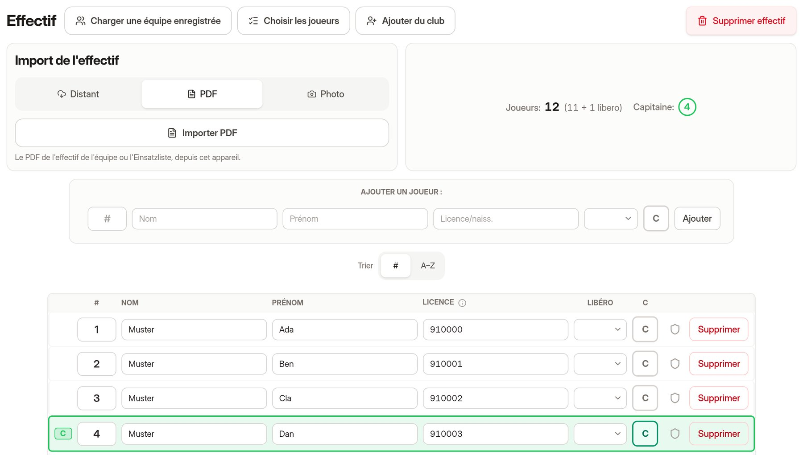
Pour marqueuses et marqueurs · eScoresheet 3.2.5
6
Une liste envoyée à l'avance
Un responsable d'équipe peut envoyer la liste du match à l'avance sur manager.openvolley.app. La carte de l'équipe affiche alors « Liste envoyée par … » : « Afficher » pour la voir, « Accepter » pour la charger, « Pas maintenant » pour la garder pour plus tard.
Vérifie-la avec l'entraîneur. Si l'entraîneur et le capitaine ont signé à l'avance, leurs signatures sont incluses.
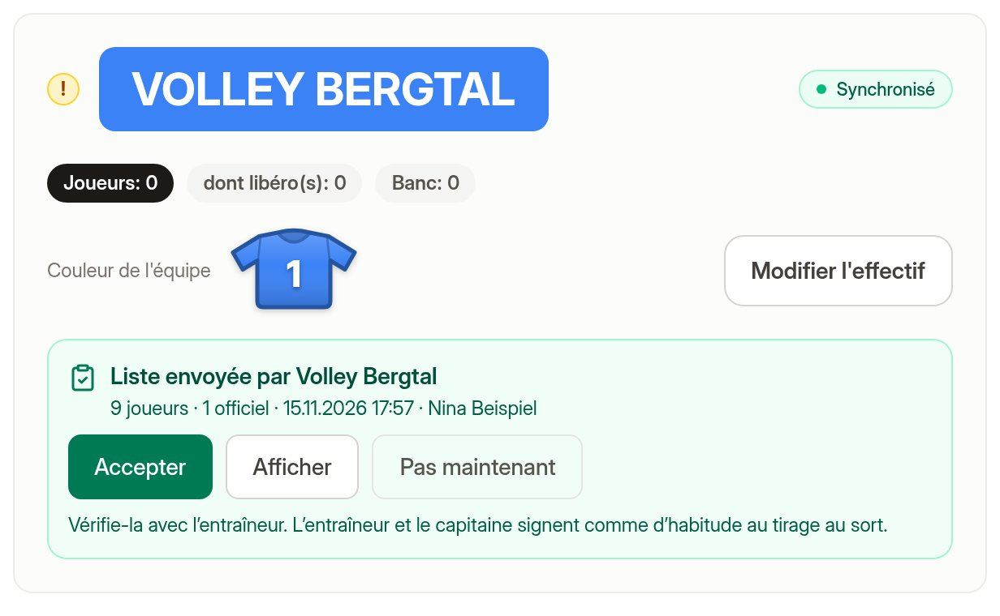
7
Sauvegardes et PIN du match
« Sauvegardes », en haut de la configuration du match, montre où ce match est enregistré : dans le cloud quand tu saisis en étant connecté, sur cet appareil (dans Chrome ou Edge avec « Choisir le dossier de sauvegarde ») et, avec l'app pour ordinateur, sur une clé USB. Garde le PIN du match, affiché sur la page des infos du match et à l'accueil : il te faut pour supprimer, restaurer ou continuer le match sur un autre appareil.
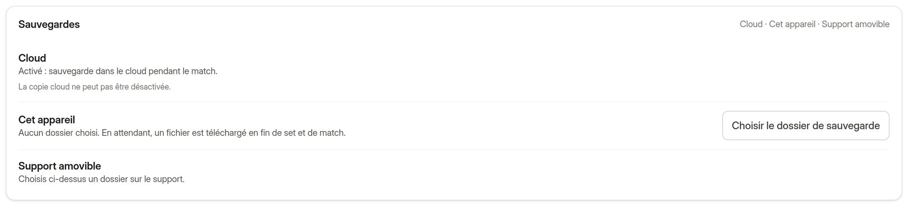
8
Tirage au sort et signatures
Appuie sur « Tirage au sort ». Règle les côtés et le premier service avec « Changer de côté » et « Changer de service », puis appuie sur « Confirmer le tirage au sort ».
Le capitaine et l'entraîneur de chaque équipe signent : « Signature équipe A » ou « Signature équipe B », puis « Capitaine » ou « Entraîneur », sur l'écran ou avec « Signer sur le téléphone ». Ils peuvent aussi signer plus tard, pendant l'échauffement.
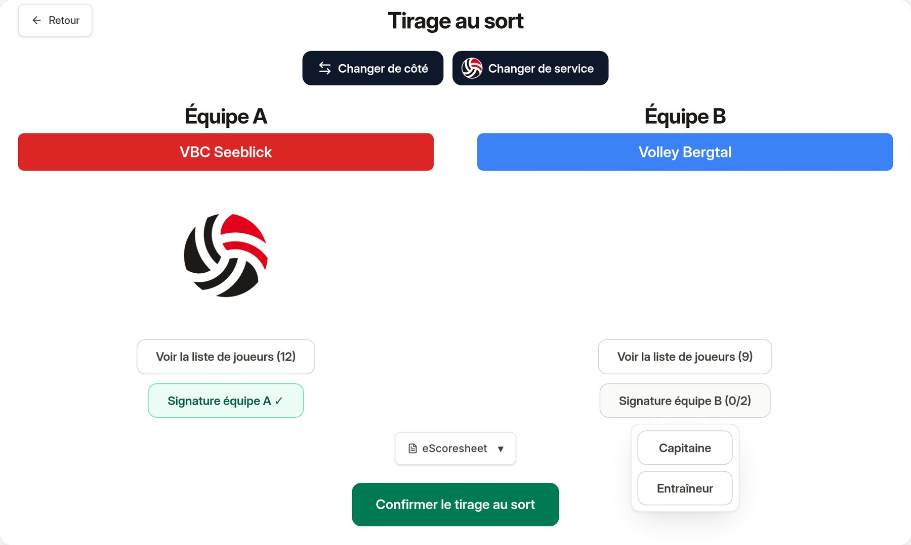
Pour marqueuses et marqueurs · eScoresheet 3.2.5
9
Formations
Appuie sur « Position de base » du côté de chaque équipe, saisis les positions I à VI et appuie sur « Confirmer ». La première formation reste masquée (« Composition de l'équipe ») jusqu'à ce que celle de l'autre équipe soit saisie. Un « Signatures manquantes » qui clignote veut dire qu'une équipe n'a pas encore signé : appuie dessus, et elle signe là. Le set 1 ne commence que lorsque les quatre ont signé.
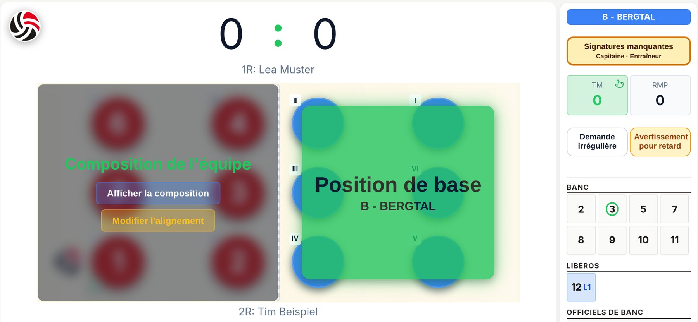
10
Échanges
Appuie sur « Lancer l'échange » avant chaque service, puis sur le bouton de point de l'équipe qui a gagné l'échange (« Point A » ou « Point B »). La case « SERVICE » montre le numéro du serveur, et l'app fait tourner une équipe quand elle reprend le service. Pendant un échange, « Rejouer l'échange » le fait rejouer.
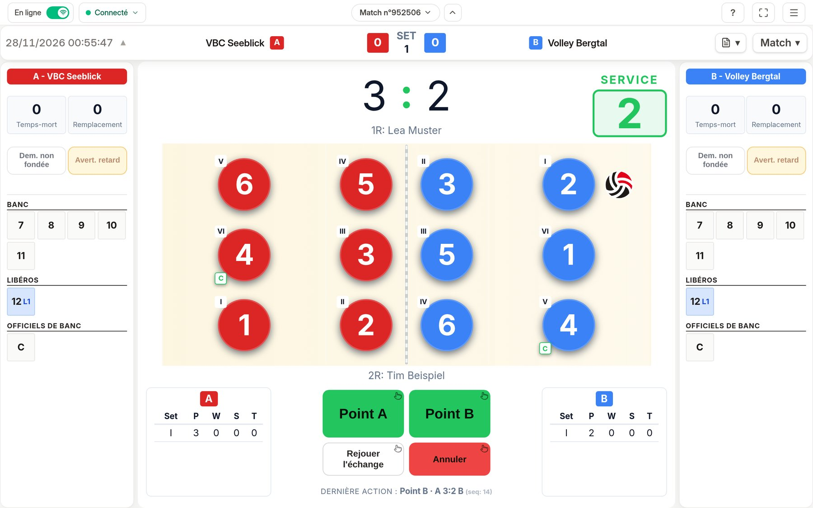
Pour marqueuses et marqueurs · eScoresheet 3.2.5
11
Annuler et changement de décision
« Annuler » reprend le dernier point. Après un point, « Changement de décision » le donne à l'autre équipe (« Donner à l'autre équipe ») ou fait rejouer l'échange (« Rejouer l'échange ») ; la fenêtre montre le nouveau score et qui sert.
Quand les arbitres reviennent sur une partie du set, utilise Match › « Revenir en arrière ». Tout le reste passe par Match › « Corrections ».
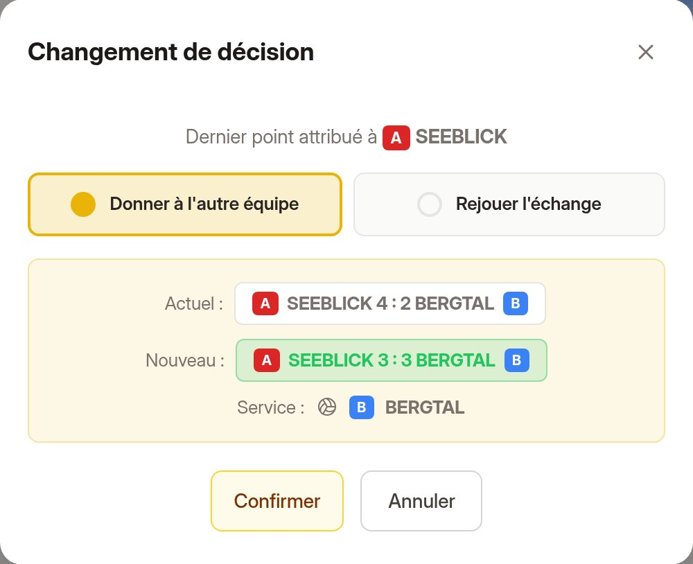
12
Temps morts, remplacements, libéros, sanctions
Temps mort : entre deux échanges, appuie sur la case « TM » de l'équipe, puis sur « Confirmer temps mort » (30 secondes).
Remplacement : appuie sur le joueur sur le terrain, sur « Changement », puis sur le joueur qui entre.
Libéro : appuie sur un joueur de la ligne arrière, puis sur « Libéro ».
Sanction : appuie sur le joueur, puis sur « Sanction ». Pour l'équipe, « Demande irrégulière » et « Avertissement pour retard » sont sous ses cases.
L'app vérifie les règles au fur et à mesure et demande avant d'enregistrer quelque chose d'inhabituel.
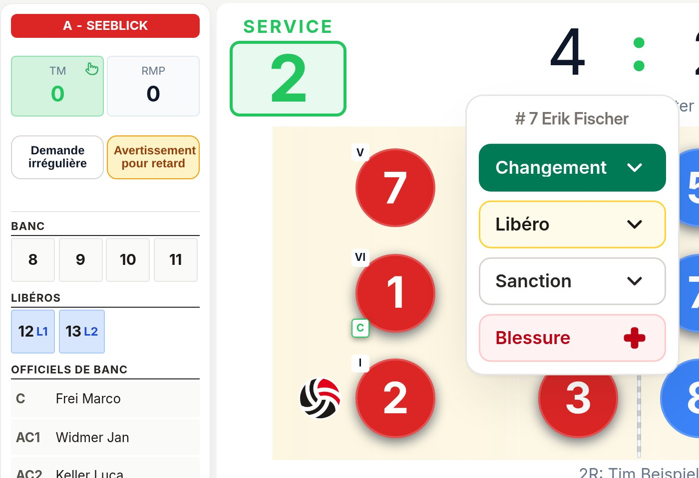
13
Demandes du banc
Avec une tablette de banc, l'entraîneur peut demander un temps mort ou un remplacement, ou envoyer la formation. Une carte apparaît alors en haut à droite.
« Accorder le temps mort » ou « Remplacer » ouvre la fenêtre habituelle, « Vérifier et accepter » la formation, et « Refuser » demande une raison que le banc voit. L'acceptation attend tant qu'un échange est en jeu.
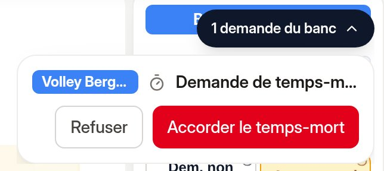
Pour marqueuses et marqueurs · eScoresheet 3.2.5
14
Fin de set
À 25 points avec deux points d'écart, l'app termine le set : vérifie le score et l'heure de fin, puis appuie sur « Confirmer ». Si le dernier point était faux, « Changement de décision » est encore là.
Ensuite, la pause entre les sets commence, avec son compte à rebours.
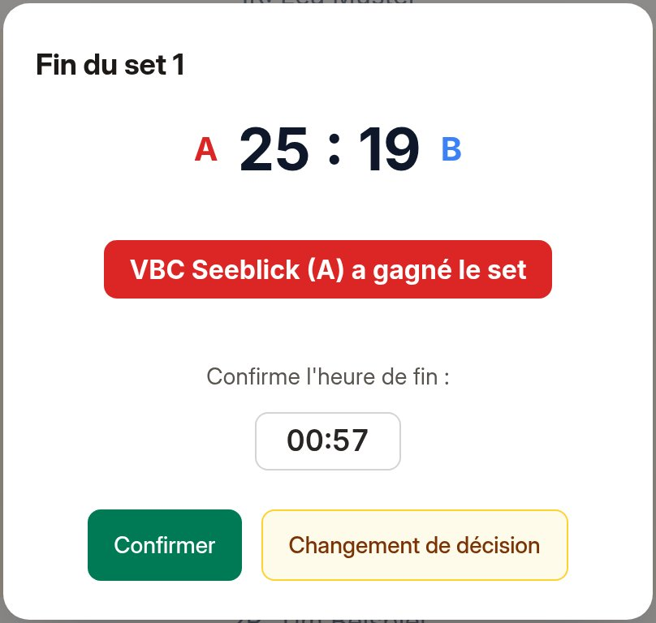
15
Set décisif
Avant le set décisif (set 3 en deux sets gagnants, set 5 en trois sets gagnants), l'app demande un nouveau tirage au sort : « Changer de côté » et « Changer de service », puis « Confirmer le set 3 ».
Le set décisif se joue en 15 points ; à 8 points, les équipes changent de côté.
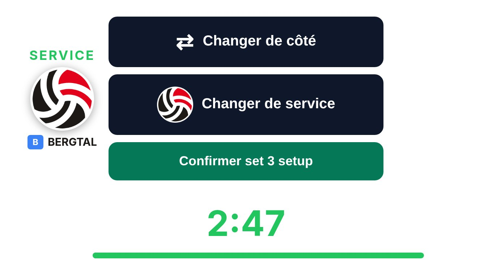
16
Fin du match
Vérifie les résultats et recueille les signatures : d'abord les capitaines, puis les officiels (« Signer sur le téléphone » et « Approuver avec le PIN » fonctionnent aussi). Puis appuie sur « Confirmer et approuver » : l'app télécharge un ZIP avec les données du match et la feuille de match en PDF et clôture le match sur le serveur. Là où la ligue envoie les feuilles de match finales, le PDF est envoyé par e-mail au marqueur, aux arbitres et aux contacts des équipes.
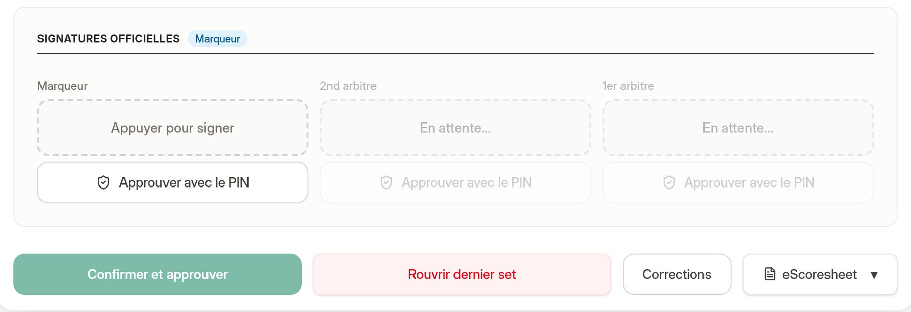
Pour marqueuses et marqueurs · eScoresheet 3.2.5
17
Tablettes dans la salle
Dans le menu (☰), appuie sur « Connecter des tablettes ». Choisis comment les tablettes se connectent, active chaque tablette et laisse-la scanner son code. Les tablettes de l'arbitre et des bancs ont besoin de leur PIN ; le livescore n'en a pas besoin. La puce dans l'en-tête (par exemple 1/3) montre combien de tablettes sont connectées.
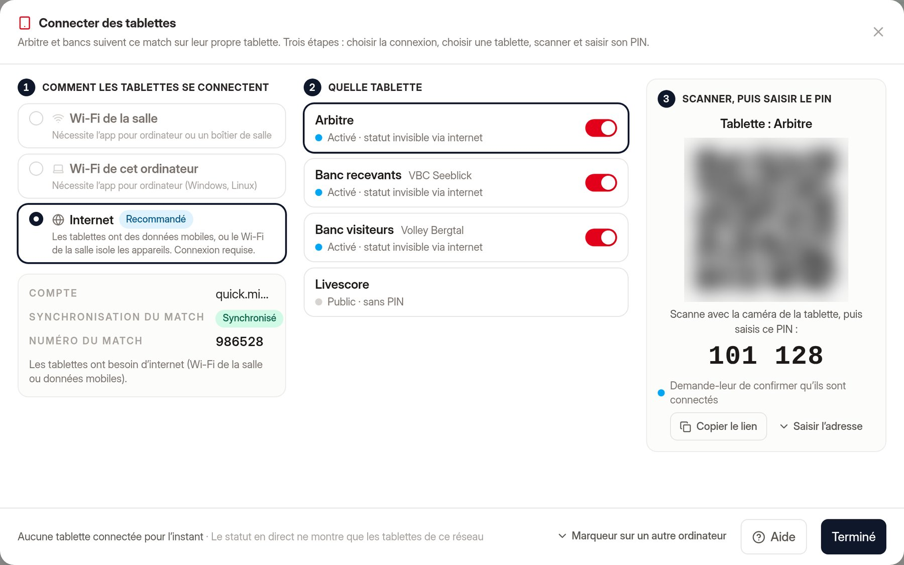
18
Hors ligne, sauvegardes et autre appareil
La saisie n'a jamais besoin d'internet : chaque modification est d'abord enregistrée sur cet appareil et envoyée dès que la connexion revient. L'en-tête montre l'état, par exemple « Connecté » ou « Hors ligne (3 en attente) ».
Pour continuer sur un autre appareil : à l'accueil, « Restaurer le match », saisis le numéro et le PIN du match, « Rechercher les sauvegardes cloud », puis « Confirmer la restauration ». L'ancien appareil arrête la saisie. Un fichier de sauvegarde fonctionne aussi (« Sélectionner le fichier de sauvegarde »).
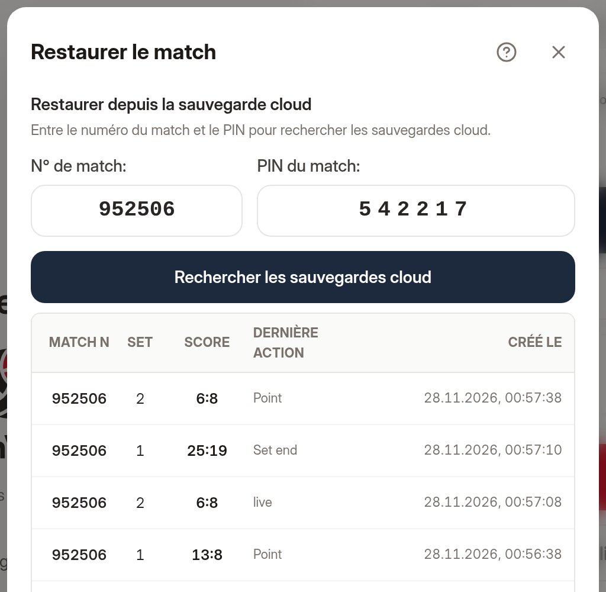
?
Plus d'aide
Chaque écran a un ? dans son en-tête : l'aide de cet écran, avec une courte vidéo et « Montrer ». La même aide, en allemand, anglais, français et italien, se trouve sur openvolley.app/support.